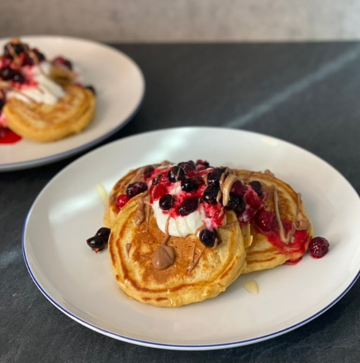
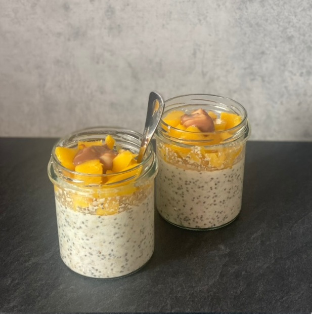
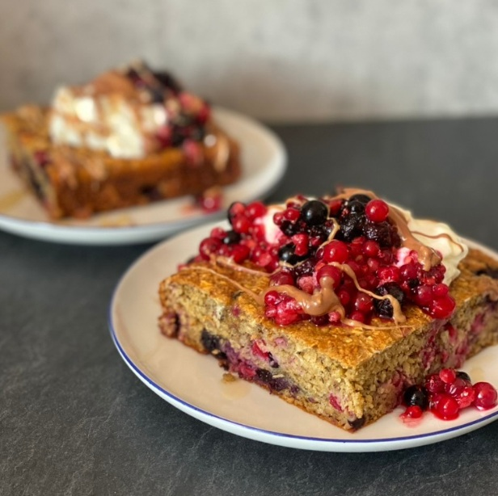
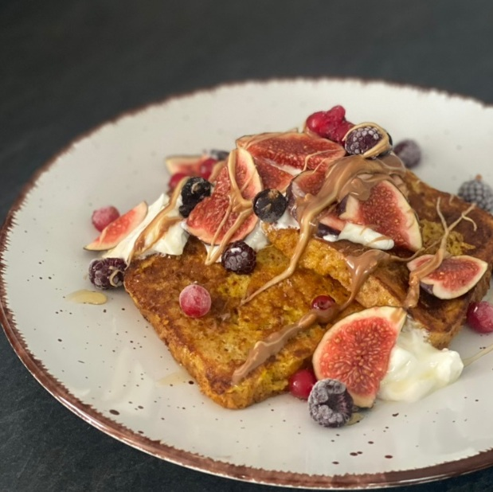
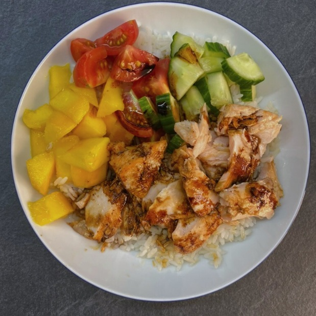

Kefírové lívance
2026/02/12
V míse smíchám vejce s kefírem a cukrem, přidám mouku s rozmíchaným kypřícím práškem...


2026/02/12
V míse smíchám vejce s kefírem a cukrem, přidám mouku s rozmíchaným kypřícím práškem...

2026/01/06
Ve skleničce smíchám všechny suché ingredience, následně přidám jogurt a doředím mlékem do...

2025/11/20
Všechny ingredience smíchám v misce, kterou následně vložím do horkovzdušné fritézy nebo trouby...

2025/09/12
Všechny ingredience smíchám v hrnečku a dám do mikrovlnné trouby na 2 minuty. Nahoru přidám...

2025/06/02
V talíři si rozšlehám vejce s mlékem a skořicí. V této směsi obalím plátky toustového chleba a...

2025/06/01
Lososa si nakrájím na kostičky a opeču na pánvi. Podávám s rýží, avokádem, okurkou a edamame...